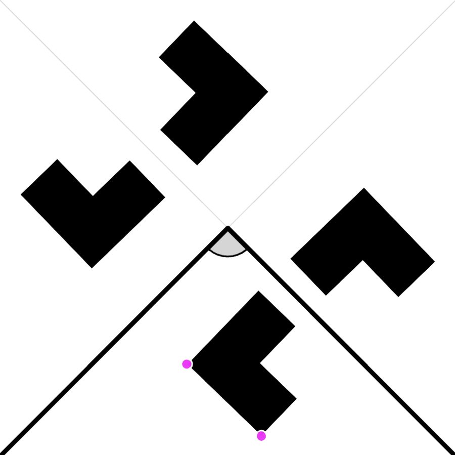
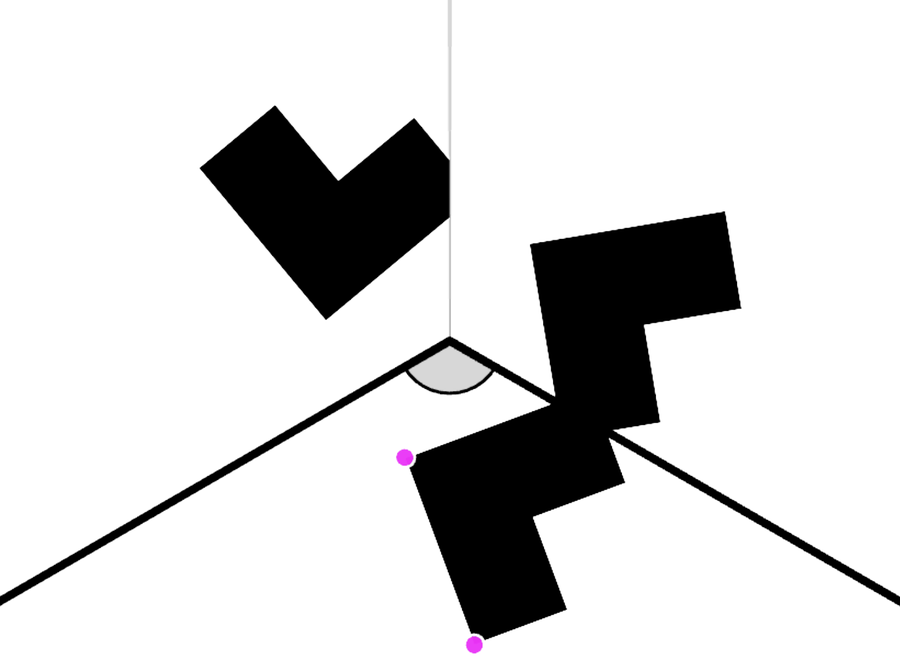
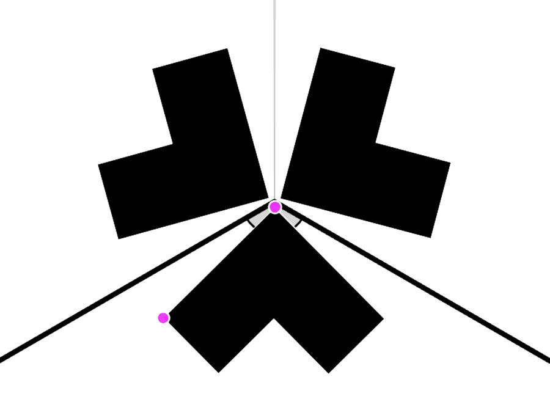
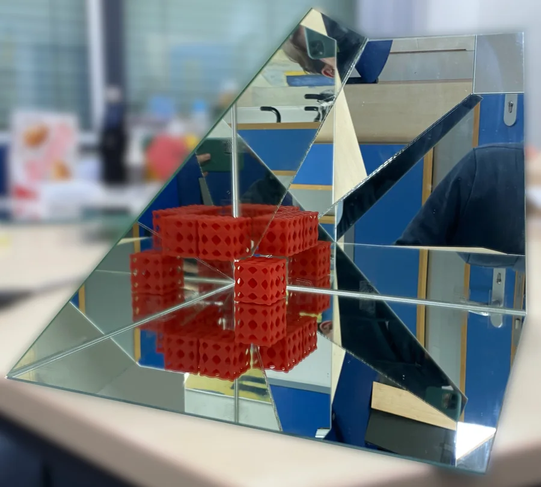

Coxeter Kaleidoscopes
How can infinity be made tangible? Mirrors set at just the right angles turn a small box into a space that seems to go on forever.
Mirrors and Coxeter Groups
A single mirror shows one copy of whatever is in front of it. When several mirrors meet, the copies are reflected again and again. If the angle between two mirrors is 180°/n for a natural number n, different sequences of reflections lead to the same image, and all copies fit together seamlessly (a). For other angles, the copies overlap and form “break edges” (b).
Coxeter groups are the mathematical structure behind this: they describe and classify arrangements of mirrors in which different paths of reflection lead to the same mirror image.

(a) 90° = 180°/2: reflecting in either order gives the same image 
(b) 120°: a break edge forms
An ordinary kaleidoscope is based on a Coxeter group of three mirrors in the plane. All three angles between them have to be of the form 180°/n and, as the angles of a triangle, add up to 180°. There are exactly three ways to do this:
(60°, 60°, 60°) (45°, 45°, 90°) (30°, 60°, 90°)
Kaleidoscopes in Space
The same principle works in three dimensions. In a mirror polyhedron whose faces meet at angles of the form 180°/n, the reflections continue in every direction and fill all of space. In these Coxeter kaleidoscopes, LED strips along the edges turn into an endless lattice of light. To look inside at all, the mirrors have to be semi-transparent: they reflect most of the light back inward but let a little of it escape – and that is the light that reaches the eye.
A Pseudo-Kaleidoscope
This model is an upside-down pyramid whose side walls are mirrored on the inside. Its base – the top pane – is a semi-transparent mirror, so the mirrored interior can be watched from outside. The tip is cut off and replaced by a display showing a pattern. Because of the exact shape of the pyramid, a lattice of patterned cubes appears. The cubes get smaller and fade in the distance, but they leave no doubt that, in an idealized world, they never end.
Strictly speaking, it is not a Coxeter kaleidoscope: each side wall meets the top pane at 45°, but neighboring side walls meet at 120°, which is not of the form 180°/n. With symmetric patterns, however, these angles do no harm (c).

(c) 120° with a symmetric pattern: no break edge 
The situation in one corner of the pyramid